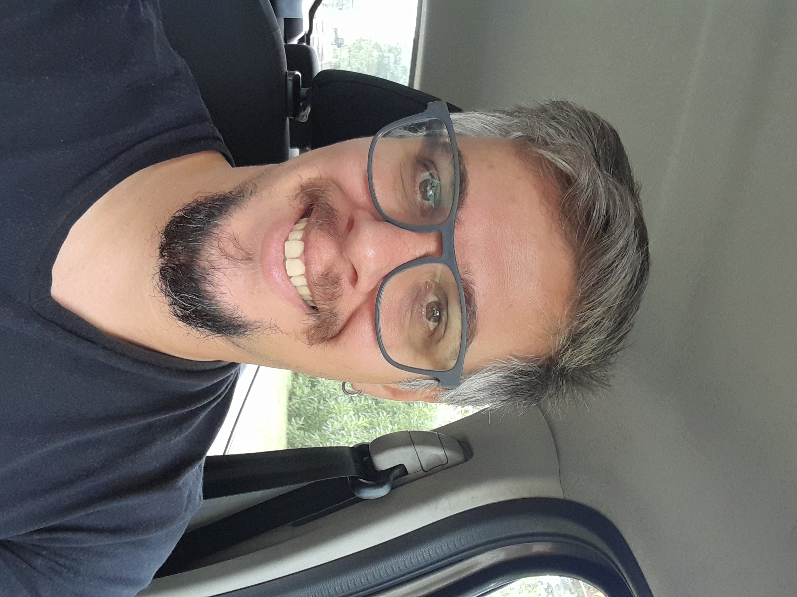

<header id="Inicio" class="pt-5 pb-3">
    <div class="container-fluid mt-5 ms-4">
        <div class="row pt-5">
            <div class="col-sm-4 col-md-4 col-xl-4 ms-auto me-0">
                <figure>  </figure>
            </div>

            <div class="col-sm-6 col-md-6 col-xl-6 text-black-50 regular-shadow ms-ms-3 me-auto">
                <h1 class="text-black-80 fs-3 pt-2"> David Emiliano Ginaca Nieto </h1>
                <h2 class="text-black-80 fs-4">Desarrollador Web FullStack Jr.</h2>
                
                <h3 class="fs-5 text-wrap md-fs-6">Sobre mi... </h3>
                <p style="text-indent: 2em;">
                    ¡Hola! Soy David, un entusiasta de la tecnología con 36 años de edad. A lo largo de mi vida
                    profesional, he explorado tanto el mundo culinario como el de la informática, encontrando pasión y
                    éxito en ambos campos.
                </p>
                <p style="text-indent: 2em;">
                    Mi carrera comenzó en el sector gastronómico, donde durante muchos años desarrollé habilidades
                    sólidas en trabajo en equipo y atención al cliente. Durante 7 años, fui propietario de mi propio
                    local, donde aprendí la importancia del trato cercano con los clientes y la gestión
                    eficiente del negocio.
                </p>
                <p style="text-indent: 2em;">
                    Sin embargo, mi verdadera pasión siempre ha sido la informática. Actualmente, estoy en mi tercer año
                    de estudio de ingeniería en informática, donde he profundizado mis conocimientos en programación,
                    sistemas y tecnología. Además, he complementado mi formación con el curso de desarrollador web full
                    stack en Argentina programa, donde adquirí habilidades prácticas en desarrollo web.
                </p>
                <p style="text-indent: 2em;">
                    El año pasado, tuve el honor de dedicar seis meses a impartir clases introductorias de programación
                    web en la ONG CILSA, donde trabajé con personas con y sin discapacidad. Esta experiencia me enseñó
                    la importancia de la inclusión y la accesibilidad en la tecnología, y me permitió compartir mi
                    pasión por la programación con otros.
                </p>
                <p style="text-indent: 2em;">
                    Mi objetivo es combinar mis habilidades en informática con mi experiencia empresarial para crear
                    soluciones innovadoras que mejoren la experiencia del usuario y contribuyan al éxito de las empresas
                    en el mundo digital.
                </p>
                <p style="text-indent: 2em;">
                    Estoy emocionado por las oportunidades que el futuro me depara y estoy comprometido a seguir
                    creciendo y aprendiendo en este apasionante campo de la tecnología.
                </p>

                <div class="d-flex justify-content-end pb-2">                    
                    <button  class="btn bg-transparent border-2 border-secondary text-secondary py-2 me-5 " (click)="downloadPDF()">Cv en pdf</button >                    
                    <a href="https://wa.me/623558202" class="btn bg-transparent border-2 border-secondary text-secondary py-2 me-5 ">WhatsApp</a>
                </div>           

            </div>
        </div>
    </div>
</header>